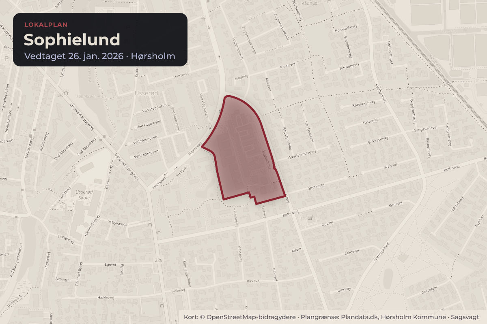
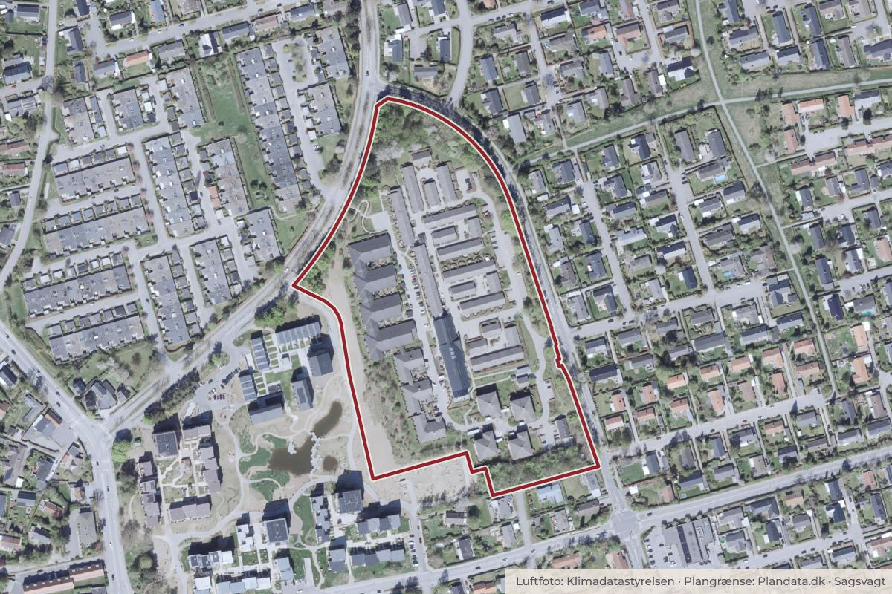

Besluttet 26. januar, Kommunalbestyrelsen, Hørsholm
Endelig vedtagelse af Lokalplan 178 - Sophielund

Kort: © OpenStreetMap-bidragydere. Plangrænse: Plandata.dk, Hørsholm Kommune.

Kort fortalt
- Hvem
- Kommunalbestyrelsen, Hørsholm Kommune
- Hvornår
- Mandag 26. januar 2026
- Status
- Besluttet. Godkendt, idet Kommunalbestyrelsen følger indstillingen fra Byudviklingsudvalget.
Er noget forkert her? Skriv til os
Læs hele sagen Kommunens egen tekst
Baggrund
Forslag til Lokalplan 178 – Sophielund har været i offentlig høring i perioden fra d. 4.
september 2025 til d. 30. oktober 2025. Der er i alt indkommet 4 høringssvar. I dette
dagsordenspunkt fremlægges høringssvarene med henblik på endelig vedtagelse af
lokalplanen.
Forslag
Administrationen anbefaler, at Byudviklingsudvalget over for Økonomiudvalget og
Kommunalbestyrelsen indstiller, at forslag til Lokalplan 178 – Sophielund vedtages endeligt.
Sagsfremstilling
Forslag til Lokalplan 178 - for Sophielund har til formål at muliggøre udvikling af matrikel nr.
186, Usserød By, Hørsholm til offentlige formål. Enten ved at muliggøre en udvidelse
af Sophielund Plejehjem, et botilbud til unge udviklingshæmmede, eller ved at matriklen
forbliver grønt areal.
Høringssvar
Administrationen har modtaget 4 høringssvar i offentlighedsperioden, disse er vedhæftet som
en hvidbog som bilag 3. En opsummering af de indkomne høringssvar samt administrationens
bemærkninger er vedhæftet som bilag 2. Forslag til Lokalplan 178 – Sophielund er vedhæftet
som bilag 1.
Høringssvarene kan kategoriseres inden for følgende temaer:
1. Trafik
2. Byggefase
3. Grønt område
4. Parkering
5. Mobildækning
Administrationens bemærkninger til høringssvarene
1. Trafik
Høringssvar Id.nr.: 1212, 1213 og 1214 (3 høringssvar).
2 borger er bekymret for af de byggemuligheder der bliver givet med lokalplanen, vil
skabe en øge trafik på Alsvej og derved skabe øget genrer i form af trafik og støj.
1 borger vurderer at trafikbilledet ikke vil ændre sig med de muligheder lokalplanen
giver.
Administrationens bemærkninger
Det er administrationens vurdering, at byggemuligheden på 1000 m² til ny bebyggelse vil have
minimal indvirkning på det trafikale billede i området. Derfor vurderer administrationen ikke, at
høringssvarene bør give anledning til ændringer af lokalplanforslaget. Administrationen vil dog
igangsætte en hastighedsmåling af trafikken på Alsvej som følge af høringssvarene, der
påpeger at der køres for stærkt udenfor lokalplanområdet.
2. Byggefasen
Høringssvar Id.nr.: 1212, 1213 og 1214 (3 høringssvar).
I høringssvarene om byggefasen er der generelt indsigelser vedrørende trafik og
trafiksikkerhed i byggefasen.
Administrationens bemærkninger
Matr. Nr. 186, hvor der med lokalplanen muliggøres nyt byggeri, er ejet af kommunen og
er ikke solgt endnu. Ved realisering af et evt. byggeri skal der skiltes tydeligt og
afspærres, hvor der er behov ift. trafik og sikkerhed. Administrationen bemærker, at der
ligger en tinglyst midlertidig færdselsret, som giver mulighed for i byggefasen at anvende
brand- og renovationsvejen i PH Park, øst for matr.nr. 186 til tung trafik. Denne ret
udløber ved udgangen af 2027. Administrationen vurderer, at høringssvarene ikke bør
give anledning til ændringer af lokalplanforslaget, idet der er taget højde for byggefasen
med i lokalplanforslaget og med servitutten.
3. Grønt område
Høringssvar Id.nr.: 209 og 1212 (2 høringssvar)
I høringssvarene er der et generelt ønske om at bevare matr.nr. 186, Usserød By,
Hørsholm som grønt område.
Administrationens bemærkninger
Dette scenarie er ét ud af tre scenarier, der muliggøres med lokalplanen. Matr.nr 186
hvor der muliggøres nyt byggeri, er ejet af kommunen og er ikke solgt endnu.
Administrationen vurderer, at høringssvarene ikke bør give anledning til ændringer af
lokalplanforslaget idet dette allerede er en mulighed i lokalplanen.
4. Parkering
Høringssvar Id.nr.: 209 og 1212 (2 høringssvar)
Det oplyses i høringssvarene, at der er en udfordring med at der bliver parkeret i
boligområdet rundt om Sophielund, frem for at bruge Sophielunds egen parkering. Dvs.
der parkeres udenfor lokalplanområdet.
Administrationens bemærkninger
Der er i forbindelse med lokalplanarbejdet udarbejdet en undersøgelse af
parkeringsforhold, der viser en overkapacitet af parkeringspladser på Sophielund. Derfor
er det vurderet, at der ikke er behov for udlæg af nye parkeringspladser ift.
udvidelsesmuligheden på 1000 m². Der er ikke foretaget parkeringsundersøgelse i
området udenfor lokalplanområdet. Administrationen vurderer, at høringssvarene ikke
bør give anledning til ændringer af lokalplanforslaget.
5. Mulighed for forbedring af mobildækning
Høringssvar Id.nr.: 1214 (1 høringssvar)
Høringssvaret ser positivt på, at der gives mulighed for at forbedre mobildækningen i
området.
Administrationens bemærkninger
Lokalplanen giver alene mulighed for at opstille mobilantenner på eksisterende
bygninger. Men der er ikke handlepligt med en lokalplan og ikke for nuværende
projekter/ansøgninger om at opstille mobilantenner indenfor lokalplanområdet.
Administrationen vurderer, at høringssvaret ikke bør give anledning til ændringer af
lokalplanforslaget.
Videre proces i forhold til vejadgang til Matr.nr. 186, Usserød By, Hørsholm:
Et af formålene med lokalplanen er at ændre vejadgangen til matr.nr. 186. Dette foregår ved at
der indgås en privatretlig aftale mellem grundejer (Hørsholm Kommune) og vejejer (DAB).
Denne aftale skal tinglyses. Processen for dette ser ud som følgende:
Grundejer ansøger vejejerne om at de kan få vejret til vejen. I dette tilfælde skal
Hørsholm Kommune ansøge Hørsholm Boligselskab.
Hvis begge grundejere er indforståede med at der skal tildeles en vejret, tinglyses
vejretten. Det er grundejer der betaler tinglysningen. Vejejer kan tage sig betalt for
vejretten, dette er rent privatretligt.
Ved tildeling af vejret forpligtes grundejer også til at deltage i vejens vedligeholdelse.
Sagens tidligere behandling
25.08.2025 Punkt 13: Beslutning om at sende forslag til Lokalplan 178 - for Sophielund i
offentlig høring (BYU – ØU - KB)
Behandling i Byudviklingsudvalget 11. december 2025
Byudviklingsudvalget tiltrådte indstillingen og anbefalede Økonomiudvalget og
Kommunalbestyrelsen, at forslag til Lokalplan 178 – Sophielund vedtages endeligt.
Udvalget bemærkede, at det ønsker, at det i formålsbestemmelsen (§ 1.1. a.)
tydeliggøres, at lokalplanen også har til formål at sikre grønne arealer.
Behandling i Økonomiudvalget 14. januar 2026
Godkendt.
Dorte Holst, V, deltog ikke under punktet.
Beslutning
Godkendt, idet Kommunalbestyrelsen følger indstillingen fra Byudviklingsudvalget.
Kilde: Hørsholm Kommune, Kommunalbestyrelsen, referat fra mødet mandag 26. januar 2026, punkt 25. Læs den originale sag hos kommunen.